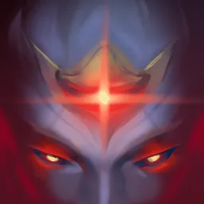
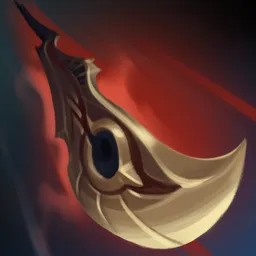
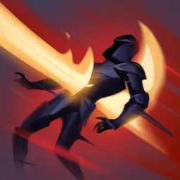
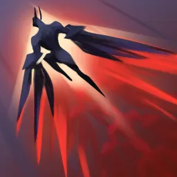
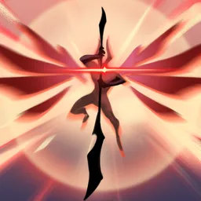

자헨 (Zaahen)
전사/암살자 / 난이도: 하
스킬
-

패시브 전쟁 단련적 챔피언에게 기본 공격 또는 스킬 적중 시 자헨이 결심 중첩을 1 얻습니다. 최대 12회 중첩되며, 중첩당 공격력이 증가합니다. 결심이 가득 차면 기본 지속 효과 추가 공격력이 두 배가 되며, 사망하게 될 경우 대신 4초 동안 경직된 다음 체력을 회복하고 부활합니다. 자헨의 부활에는 재사용 대기시간이 적용됩니다.
-

Q 다르킨의 글레이브자헨이 다음 기본 공격 시 두 번 공격하며 추가 물리 피해를 입히고 체력을 회복합니다.
-

W 공포의 귀환자헨이 지정한 방향으로 내질러 적중한 적에게 물리 피해를 입히고 끌어당겨 물리 피해를 입힙니다.
-

E 찬란한 쇄도자헨이 돌진한 후 주변을 가르며 근처 적에게 물리 피해를 입힙니다. 가르기 범위 가장자리에 있는 적은 대신 물리 피해와 대상 최대 체력에 비례한 마법 피해를 입습니다.
-

R 단호한 판결기본 지속 효과: 자헨의 방어구 관통력이 증가합니다. 사용 시: 자헨이 날아오릅니다. 스킬을 사용하는 동안 받는 피해량이 50% 감소합니다. 자헨이 아래로 내려찍으며 물리 피해를 입히고 적 챔피언에게 입힌 피해량의 33%만큼 체력을 회복합니다.
배경 스토리 요약
신성과 불경한 힘을 모두 지닌 추락한 신 자헨은 자신을 집어삼키려는 타락에 맞서 싸우며, 동족 다르킨을 사냥합니다. 광기를 피해 스스로 글레이브 속에 자신을 가두었던 자헨은 이제 자유의 몸이 되어 고결한 마음과 잔혹한 의지로 움직입니다. 내면에서 벌어지는 영원한 전쟁을 버텨내는 한, 자헨은 룬테라를 파멸로 이끄는 모든 존재 위에 우뚝 서게 될 것입니다.